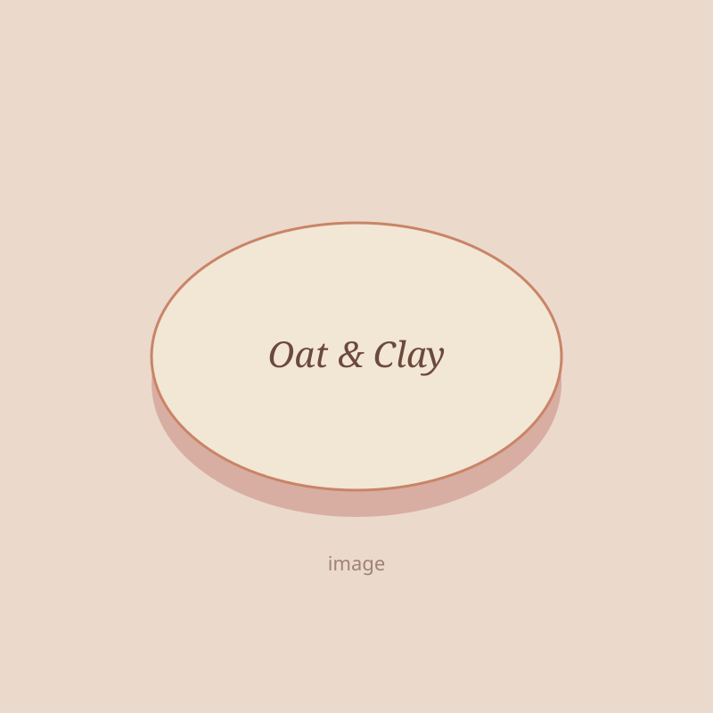

Plant-based Oils
올리브·코코넛·시어버터 등 100% 식물성 오일을 저온에서 배합해 영양을 지킵니다.
Handmade Soap Atelier · Since 2026

일상에 스며드는 자연의 작은 의식,
손끝으로 빚은 한 조각의 비누

02 — Brand Story
손끝에서 시작된 이야기
작은 작업실의 나무 테이블 위에서
오일을 데우고, 허브를 말리고,
비누가 굳어가는 시간을 기다립니다.
서두르지 않는 손이 가장 좋은 비누를 만든다고 믿습니다.
OAT & CLAY는 자연에서 온 원료만을 골라 한 번에 적은 양을 손으로 만듭니다. 합성 향료와 색소 대신 식물의 향과 흙의 색을 담아, 씻는 순간이 하루를 돌보는 작은 의식이 되도록 합니다.


03 — Our Values · 자연을 담은 가치
땅과 햇빛이 키운 식물성 오일과 허브만 담았습니다.
모든 비누는 작은 작업실에서 사람의 손으로 완성됩니다.
플라스틱 대신 종이와 끈으로, 지구에 가볍게 포장합니다.
올리브·코코넛·시어버터 등 100% 식물성 오일을 저온에서 배합해 영양을 지킵니다.
한 번에 40개만 만드는 소량 생산으로, 한 조각 한 조각의 질감을 직접 확인합니다.
재생지 포장과 면 끈, 리필 가능한 비누 받침으로 쓰레기 없는 욕실을 제안합니다.
04 — Product
자연이 만든 다채로움, 피부와 기분에 맞는 한 조각을 골라보세요.

오트밀크 · 무향 · 100g
₩14,000
라벤더 · 플로럴 · 100g
₩15,000
숯 · 티트리 · 100g
₩16,000
오이 · 금잔화 · 100g
₩15,000
로즈 · 클레이 · 110g
₩17,000
님 · 네롤리 · 100g
₩16,00005 — Handmade Process
원료 준비부터 포장까지, 정성이 쌓이는 시간 6주.

직접 기르거나 계약 농가에서 받은 허브를 그늘에서 말리고, 오일은 산패 여부를 하나씩 확인합니다.

40℃ 이하의 낮은 온도에서 오일과 원료를 천천히 저어 섞어, 식물의 영양이 그대로 남도록 합니다.

나무 틀에 부어 하루 동안 보온한 뒤, 손으로 한 조각씩 잘라 모서리를 다듬습니다.

바람이 잘 통하는 선반에서 4~6주 동안 숙성해 더 단단하고 순한 비누로 완성합니다.

재생지로 감싸고 면 끈으로 묶어, 손글씨 라벨과 함께 당신에게 보냅니다.


주요 원료